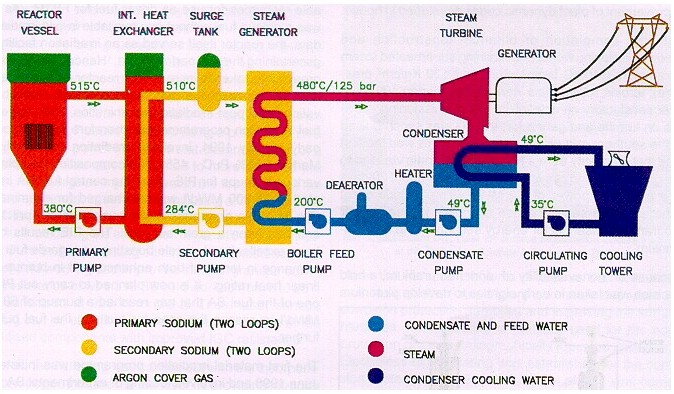

CORRECT!
Breeder reactors are a revolution in the nuclear power generating community. These reactors have the capability of not only generating clean and safe power but also producing additional fuel to be used by other reactors thereby putting to rest the ever troubling question of fuel availability and making Nuclear Power a Renewable Energy Source.
The Nuke Quiz #2
Question 5
Which of these is a consequence of the revolution brought in the nuclear power sector through the use of Breeder Reactors?
